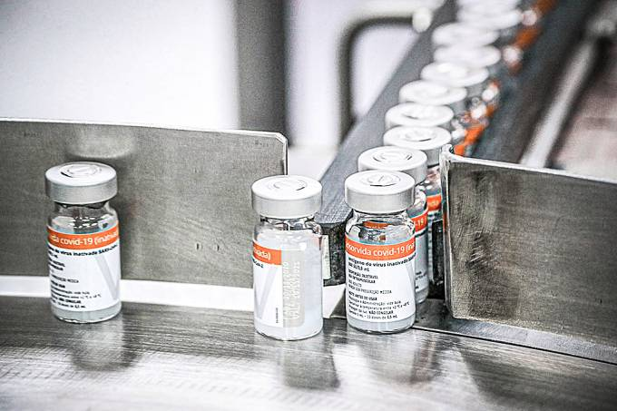
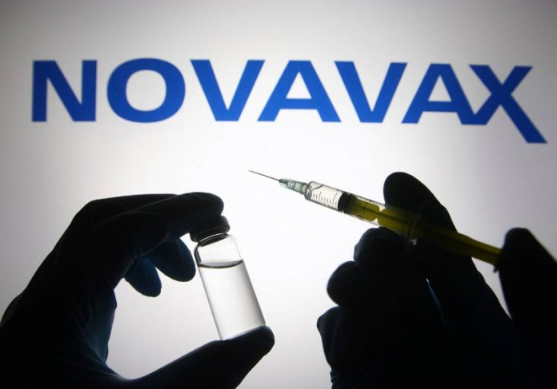

Principais Noticias sobre COVID-19
Butantan conclui entrega de 100 milhões de vacinas ao Ministério da Saúde
O Instituto Butantan concluiu, nesta quarta-feira, 15, todas as entregas de vacina contra a covid-19 ao Ministério da Saúde. A previsão inicial era concluir os envios até o fim deste mês, depois o Butantan adiantou para o fim de agosto, e depois mudou novamente a data para meados de setembro.
De acordo com o laboratório paulista, no último lote estavam 5,1 milhões de doses que foram entregues no início da tarde. A partir de agora, começam a ser liberadas doses de vacina a estados que firmaram contratos diretamente com o Butantan, como Ceará, Espírito Santo, Pará, Piauí e Mato Grosso.
Dimas Covas, presidente do Butantan, disse que também foram enviadas mais 1,8 milhão de doses para substituir parte do lote de 12,1 milhões que foram colocadas em quarentena pela Agência Nacional de Vigilância Sanitária (Anvisa).
O problema apontado pelo órgão é que os imunizantes foram fabricados em uma planta na China que não foi inspecionada pela Anvisa. "Até o dia 29 substituiremos todas as vacinas e esperamos que a Anvisa libere logo o restante", disse Covas em entrevista coletiva no Palácio dos Bandeirantes.
A vacina do Butantan foi a primeira aplicada no Brasil, no dia 17 de janeiro. De acordo com dados do Ministério da Saúde, mais de 94 milhões de doses já foram distribuídas. Mais de 33% da população imunizada recebeu a Coronavac, sobretudo profissionais de saúde e idosos acima de 80 anos. Atualmente, é o segundo imunizante mais usada no país, somente atrás da vacina da Fiocruz/AstraZeneca.
Alvo de críticas do presidente Jair Bolsonaro (sem partido), a vacina foi uma aposta do governador de São Paulo, João Doria (PSDB), que firmou uma parceria com o laboratório chinês Sinovac para o envase e transferência de tecnologia para produzir o imunizante no Brasil.
A Novavax Inc informou que iniciou testes para uma vacina combinada, que será aplicada contra a covid-19 e a gripe.
Todo o ensaio será conduzido na Austrália e a farmacêutica espera obter os resultados do teste no primeiro semestre de 2022.
“A combinação dessas duas vacinas pode levar a maior eficiência para o sistema de saúde e alcançar altos níveis de proteção contra a Covid-19 e influenza com um único regime (de dose)”, disse Gregory Glenn, presidente de Pesquisa e Desenvolvimento da Novavax. Vacinas combinadas
A pesquisa vai avaliar 640 adultos saudáveis entre 50 e 70 anos. Todos os voluntários já foram infectados com o coronavírus.
Ainda sem um nome comercial, a nova vacina combinará a NVX-CoV2373 e a NanoFlu.
A primeira é aplicada contra a Covid-19 e a segunda contra a influenza.
A dose também terá um reforço, não divulgado ainda pela Novavax.
Bons resultados
Em estudos pré-clínicos, a vacina combinada gerou ótimos resultados para influenza A e B e protegeu contra o coronavírus.
Em junho, a fase 3 do estudo, publicada na “The New England Journal of Medicine” mostrou que a vacina contra a Covid-19 da Novavax tem eficácia de 89,7% contra a infecção.
O imunizante é administrado em duas doses com um intervalo de 21 dias.
Covid-19: Fiocruz recebe bancos de células e vírus para produzir IFA
O Instituto de Tecnologia em Imunobiológicos da Fundação Oswaldo Cruz (Bio-Manguinhos/Fiocruz) recebeu hoje (2), no Rio de Janeiro, um banco de células e outro de vírus para iniciar a produção do ingrediente farmacêutico ativo (IFA) da vacina contra a covid-19. A fabricação do insumo tornará o país autossuficiente na produção da vacina Oxford/AstraZeneca na Fiocruz, substituindo o IFA importado da China.
Ao receber os bancos, a presidente da fundação, Nísia Trindade, comemorou a produção do IFA como uma forma de dar autonomia à produção da vacina e fortalecer o complexo econômico e industrial da Fiocruz.
"Esperamos dar, de uma forma significativa, mais essa contribuição ao nosso país e apoiar o esforço global de controle dessa pandemia e de superação desse grave quadro de crise", disse.
Os bancos de células e vírus são a base para a produção do IFA e chegaram ao Aeroporto Internacional do Rio de Janeiro às 8h03, vindos dos Estados Unidos. O banco de células foi enviado em nitrogênio líquido, mantido a uma temperatura de aproximadamente -150ºC, e o banco de vírus em gelo seco, a cerca de -80ºC.
Descongelamento
O descongelamento do material será a primeira etapa do trabalho, que passará por uma série de passos de produção e controle de qualidade que duram cerca de 45 dias. A vacina Oxford/AstraZeneca utiliza adenovírus de chimpanzé modificados geneticamente para carregar informações genéticas do coronavírus e despertar a resposta imune do corpo humano.
Esses vírus precisam ser multiplicados em biorreatores, em ambiente controlado, e filtrados para a produção de um concentrado viral puro que é novamente congelado para aguardar a formulação da vacina, quando é diluído em outras substâncias como termoestabilizadores capazes de fazer com que a vacina resista em refrigeradores comuns.
Bio-Manguinhos produzirá dois lotes de pré-validação e três de validação do IFA, que precisarão ser verificados pela AstraZeneca em um teste de comparabilidade que será feito no exterior.
Além disso, a Fiocruz vai abrir um novo processo de submissão contínua para alterar o registro da vacina junto à Agência Nacional de Vigilância Sanitária (Anvisa). A agência reguladora precisa autorizar a mudança no local de fabricação do IFA para que as doses possam começar a ser entregues ao Programa Nacional de Imunizações (PNI), o que está previsto para outubro.
Até o momento, Bio-Manguinhos já recebeu os certificados de Boas Práticas de Fabricação (cBPF) e de condições técnico-operacionais (CTO), que permitem o início da produção, mas não são o suficiente para autorizar a aplicação das doses na população.
O diretor de Bio-Manguinhos, Maurício Zuma, estima que a capacidade de produção de IFA na Fiocruz poderá permitir a fabricação de 15 milhões de doses por mês. O instituto vai iniciar a produção em grande escala antes da aprovação da Anvisa, para já ter um estoque de doses prontas quando a agência autorizar o uso.
Plataforma revolucionária
O vice-presidente de produção e inovação da Fiocruz, Marco Krieger, ressaltou que o Brasil começará a produzir IFA nacional de uma plataforma tecnológica revolucionária.
"Estamos vendo uma revolução no mundo nesse campo das vacinas. A ciência deu uma resposta muito rápida e temos aqui a satisfação de, no primeiro ano em que essas tecnologias estão sendo utilizadas no enfrentamento da emergência sanitária, temos a oportunidade de fazer a produção 100% nacional", disse ele.
Acrescentou que "a gente precisa pensar em usar as novas tecnologias para os novos desafios, mas também para os velhos problemas. Receber a tecnologia tem um duplo significado para a gente usar essa tecnologia em vários cenários associados à saúde pública".
CoronaVac dá proteção acima de 90% a quem tem comorbidades, diz estudo
Informações preliminares do estudo CovacManaus, realizado na capital amazonense, mostram que a CoronaVac, vacina da farmacêutica chinesa Sinovac contra a covid-19 garante proteção contra a doença superior a 90% em pessoas com comorbidades. As informações são do Instituto Butantan, que produz o imunizante no Brasil.
A pesquisa está sendo feita com 5 mil profissionais da educação e da segurança pública da rede estadual de Manaus, com idades entre 18 e 49 anos. Do total desse público vacinado com o imunizante, somente 2,6% tiveram infecções causadas pelo SARS-CoV-2. O índice de hospitalizações pela doença foi de 0,1%, e o de admissões em Unidades de Terapia Intensiva (UTIs) foi de 0,04%. Um óbito foi confirmado, configurando uma porcentagem de 0,02% da amostra.
“A efetividade da CoronaVac foi superior a 97% contra infecções, hospitalizações, internações em UTI [unidades de terapia intensiva] e mortes. Outro indicador relevante é que, entre os vacinados, 91% apresentaram anticorpos detectáveis após tomarem a primeira dose, e 99,8% após a segunda dose”, destacou o Butantan em nota.
Entre as principais comorbidades apresentadas pelos voluntários que participam do estudo estão obesidade (72%), diabetes (54%), hipertensão arterial (36%) e imunossupressão (27%).
Queda no número de óbitos de idosos
Mortes em decorrência da Covid-19 entre pessoas com mais de 70 anos de idade no Brasil caíram 88%. Os dados são de um levantamento do Instituto Butantan com base no sistema SIVEP-GRIPE. Pesquisadores analisaram o período entre março, mês de início da imunização de idosos com a CoronaVac, e agosto deste ano.
Record TV Interior SP
Vários levantamentos apontam que a pandemia está em queda no país e também na nossa região, mas nós já mostramos no SP Record que a variante delta ainda avança e não é hora de relaxar nos cuidados. A vacinação é a melhor arma para enfrentar a covid, uma doença que deixa sequelas em mais da metade dos pacientes.
*Reportagem exibida em 15/09/2021.